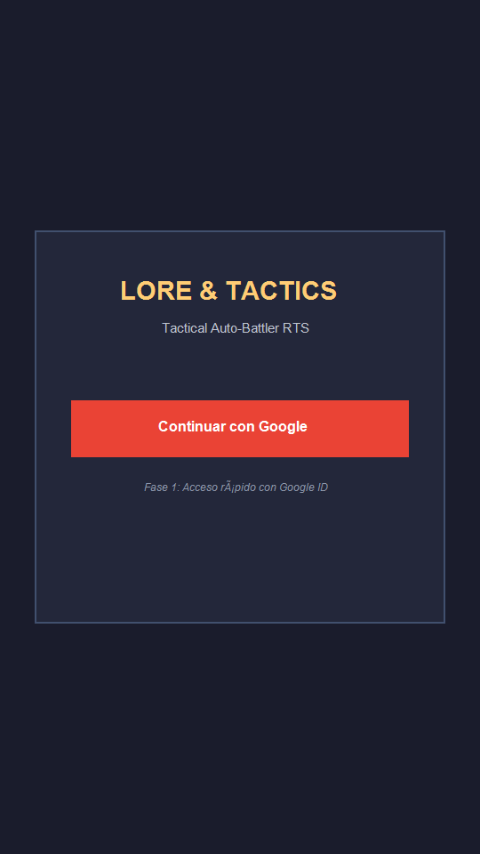
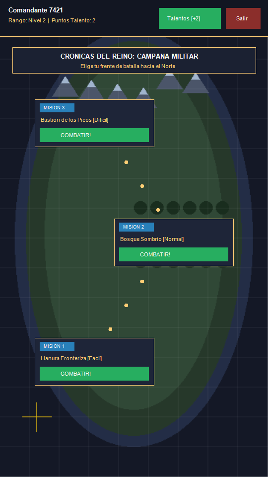
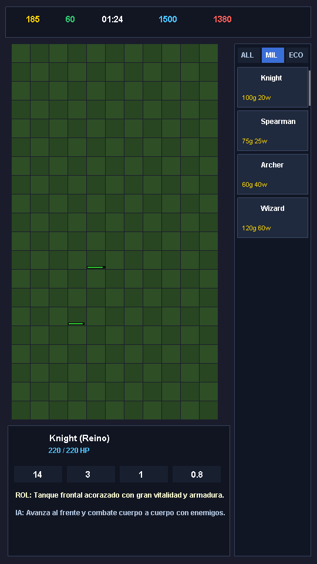
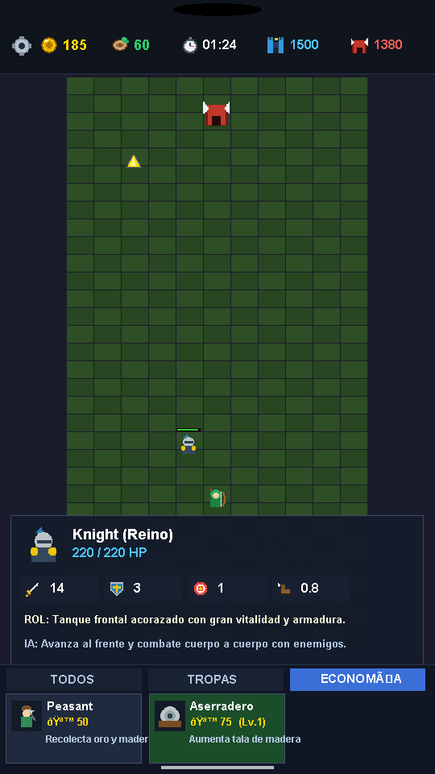
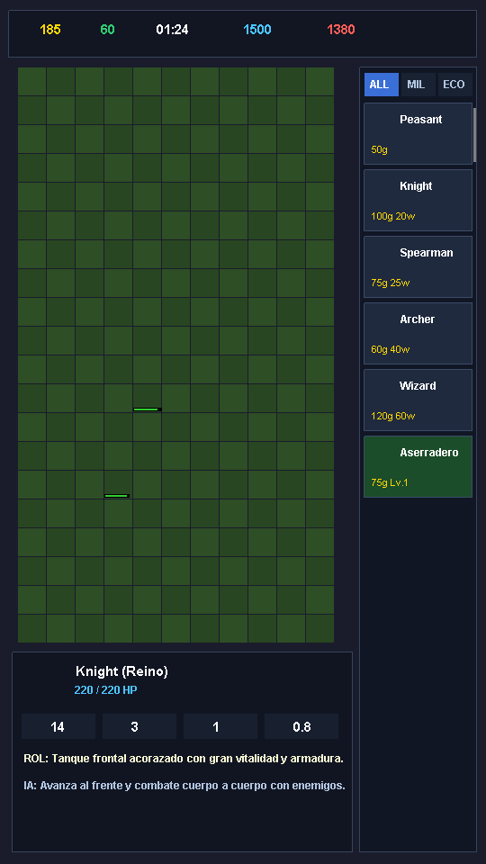

| Unidad | Bando | Costos | HP | Daño | Rango | Velocidad | Rol / Habilidad Especial |
|---|---|---|---|---|---|---|---|
| Peasant | Reino | 50g | 40 | 2 | 1 | 1.5 c/s | Recolecta 10 de oro o madera en viajes cíclicos. |
| Knight | Reino | 100g / 20w | 220 | 14 | 1 | 0.8 c/s | Tanque pesado con armadura 3. Línea frontal. |
| Spearman | Reino | 75g / 25w | 130 | 12 | 1 | 1.0 c/s | Bonus x2 vs Heavy (demuele Orcos). |
| Archer | Reino | 60g / 40w | 70 | 10 | 4 | 1.0 c/s | DPS continuo a larga distancia. |
| Wizard | Reino | 120g / 60w | 60 | 18 | 3 | 0.8 c/s | Daño mágico (ignora armadura) + Splash (área 1). |
| Goblin | Horda | Bounty: 10g | 60 | 7 | 1 | 1.6 c/s | Infantería ligera muy rápida y enjambre. |
| Orc | Horda | Bounty: 20g | 180 | 16 | 1 | 0.9 c/s | Guerrero pesado (Heavy) con armadura 2. |
| Goblin Archer | Horda | Bounty: 12g | 55 | 8 | 4 | 1.0 c/s | Hostigador a distancia veloz. |
| Orc Chieftain | Horda | Bounty: 100g | 600 | 35 | 1 | 0.6 c/s | Mini-jefe colosal: Heavy, armadura 4 y golpe en área. |
BattleSim como clases C# estándar independientes de Unity (sin MonoBehaviour ni físicas de Unity):
UnitSpawned, UnitMoved, UnitAttacked, BattleEnded) observados por la vista.Assets/Resources/Data/units.json y levels.json. Esto evita conflictos de GUIDs entre ramas de desarrollo y permite ajustar balance y nuevos mapas modificando texto plano.
Login, Overworld, Battle) se autoconstruyen por código mediante SceneBuilder.cs. Cada pantalla inyecta su Canvas, CanvasScaler adaptativo y jerarquía visual en Awake.